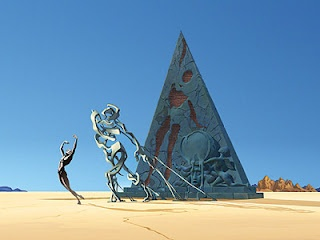

The first piece of work I would like to show is 'Destino'. This work was illustrated by Salvador Dali &
Walt Disney, in collaboration together.
The 5 minute video can be viewed by clicking on
This link
I like this work because of the feeling that it creates, alonside it's 'world-building' nature.
I am in love with this work because of how far away it takes me. It is a beautiful example of a piece of
work that makes you feel like you have entered the artists dimension. In this case, the music
adds massively to the content for me.
The music that goes along with film is something that I take with me on my shoots. I will put the
sountracks to films on my Spotify and walk around the streets taking pictures. I do this because the
film used the music at an opportune moment, or in this case throughout, and those scenes
made me feel inspired, and the feeling from the song carries over to the point of my own creation.
This illustration/short film has served as a strong source of inspiration for me for years now
and I consistently get the same intense feeling of inspiration from it. I love showing it to other
people for the first time, and it is one of my favourite pieces of art ever made.
